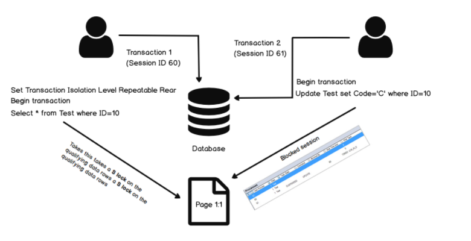

Transactions, ACID

Transactions
Definition of DBMS Transaction Processing
-
DBMS Transaction Processinglà mộtunit of data processingcủa Database trong process xử lý các hoạt động truy cập tới database. Có thể hiểuTransactionnhư một phương tiện phân phốiquá trình xử lý thông tin. -
Quá trình xử lý thông tin này là một tập hợp các
thao tác với dữ liệu(group ofDatabase Operations), chứa một hoặc nhiềudatabase actionsnhưretrieve,insert,update.

Note
Transactionlà một tập hợp cácoperations.- Một Transaction đại diện cho sự truy cập, thay đổi dữ liệu trong database.
- Transactions chỉ cho ra hai kết quả: hoặc là tất cả các operations được thực hiện thành công; hoặc là không một operations nào được thực hiện thành công cả -
All or nothing - Transaction hoạt động với database dựa trên 3 thao tác chính :
Read,Write,Commit. - Operations được thực hiện trong
RAMho·∫∑cCPU→ performance c·ªßa m·ªôt transaction ph·ª• thu·ªôc v√†o c√°c process c·ªßaRAM,CPU.
Concurrency in Transactions
Việc truy cập tới resource của database dựa trên cơ chế shared resource, tức là các resource sẽ được sử dụng bởi nhiều người dùng và xử lý đồng thời. Ví dụ như hệ thống ngân hàng, hệ thống đặt chỗ đường sắt và đường hàng không, giám sát thị trường chứng khoán, kiểm kê siêu thị và thanh toán, v.v.
Nếu không quản lý quyền concurrent access trong từng Transactions của database có thể tạo ra các vấn đề như:
- Lỗi phần cứng và sự cố hệ thống
- Thực hiện đồng thời cùng một giao dịch,
deadlockhoặc hiệu suất chậm
States of Transactions
Để dễ hình dùng quá trình chuyển State của Transactions, ta có thể tham khảo diagram dưới đây:

-
Khi bắt đầu một Transaction, Transaction sẽ được thực thi và nằm trong trạng thái
Active State. Trong trạng thái này, cácREAD or WRITE operationcó thể được thực hiện. -
Khi các Operation thực thi xong, transaction sẽ chuyển sang trạng thái này
-
C∆° ch·∫ø
recoveryhoạt động để đảm bảo lỗi hệ thống sẽ không dẫn đến việc vĩnh viễn không thể ghi lại các thay đổi trong transaction. Nếurecoverycho kết quảsuccess, transaction sẽ được commit và chuyển sangCommitted State -
Trong trường hợp
recoverycho kết quảfail, transaction thất bại và sẽ được chuyển sangFailed State. -
Trong trường hợp một transaction đang ở
Active Statevà đang thực thi các operations, nhưng bị cancel bởi hệ thống hay bất cứ lý do gì thì sẽ được chuyển sangFailed State(hoặc gọi làRollback). -
Transaction rời khỏi hệ thống, kết thúc một Transaction.
Tóm lại
| State | Description |
|---|---|
| Active State | Bắt đầu một Transaction, trong trạng thái này, các READ or WRITE operation có thể được thực hiện. |
| Partially Committed | Transaction sẽ chuyển sang trạng thái này sau khi kết thúc quá trình thực thi các Operations. |
| Committed State | Nếu các Operations được thực thi THÀNH CÔNG, transaction sẽ chuyển sang trạng thái này. Tất cả các thay đổi của Operations được ghi lại vĩnh viễn vào cơ sở dữ liệu. |
| Failed State | Nếu các Operations được thực thi THẤT BẠI, hoặc một transaction bị cancel khi đang ở Active State, transaction sẽ chuyển sang trạng thái này |
| Terminated State | Chấm dứt Transaction. |
ACID
-
ACIDlà 1 tập hợp cácthuộc tínhmà 1 transaction thao tác với database phải đạt được nhằm bảo đảm tínhtoàn vẹn,hợp lệ,an toàn, tínhbền vững… của dữ liệu ở database. -
Nếu 1 transaction không thoả mản 1 trong các thuộc tính này thì sẽ không thể thao tác với database thành công, bị rollback ngay lập tức.
-
ACIDlà cụm từ viết tắt của 4 thuộc tính sau: Atomicity, Consistency, Isolation và Durability:

Atomicity
-
Atomicity- T√≠nh b·∫£o to√†n?üòÄ: D·ª±a v√†o ruleAll or nothingk·ªÉ tr√™n, khi m·ªôt chu·ªói c√°c operations l·∫ßn l∆∞·ª£t thao t√°c v·ªõi database trong 1 transaction, n·∫øu 1 operation ƒëang trong x·ª≠ l√Ω m√† x·∫£y l·ªói ·ªü database, hay crash h·ªá th·ªëng, v.v‚Ķ th√¨ to√†n b·ªô transaction s·∫Ω b·ªã h·ªßy b·ªè v√† b·ªã rollback, d·ªØ li·ªáu ·ªü database v·∫´n gi·ªØ nh∆∞ c≈© tr∆∞·ªõc khi c√≥ s·ª± thay ƒë·ªïi. N·∫øu nh∆∞ kh√¥ng x·∫£y ra l·ªói hay v·∫•n ƒë·ªÅ g√¨ trong qu√° tr√¨nh x·ª≠ l√Ω c√°c operations th√¨ transaction ƒë√≥ s·∫Ω commit th√†nh c√¥ng, d·ªØ li·ªáu ph√≠a database c≈©ng ƒë∆∞·ª£c c·∫≠p nh·∫≠t th√†nh c√¥ng lu√¥n. -
Theo
State Transaction Diagramở trên, một transaction chỉ có 2 kết quả:Abort: Tất cả các thay đổi của transaction sẽ không được đồng bộ xuống database.Commit: Tất cả các thay đổi của transaction được đồng bộ xuống database.
-
Lấy ví dụ chúng ta có một giao dịch của ngân hàng chuyển 100tr đồng từ tài khoảng X sang tài khoản Y.

Nếu transaction thực thi thành công tại bước T1 nhưng khi đến bước T2 thì hệ thống bị lỗi. Lúc này nếu những thay đổi này được đồng bộ xuống database thì vô tình tài khoản X bị mất 100tr đồng mà tài khoản Y lại không nhận được đồng nào. Đây là ví dụ kinh điển mà Atomicity có thể đảm bảo các hệ thống sẽ không xảy ra sai xót như trên.
Consistency
Consistency- Tính nhất quán: Một transaction phải đảm bảo tínhhợp lệcủa dữ liệu khi cập nhật vào database. Nếu dữ liệu đưa vào database mà như kiễu dữ liệu không phù hợp, không thỏa mãn constraint, rule, trigger, query nhầm table,… thì transaction đó sẽ bị rollback, dữ liệu ở database vẫn được giữ nguyên lúc chưa thay đổi. Chính vì vậy dữ liệu từ transaction phải hợp lệ, đúng đắn, nhất quán với những constraint, cấu trúc table, rule… đã được định nghĩa hay khai báo từ phía database.
Isolation
-
Isolation- Tính cô lập: Mọi thao tác của 1 transaction đều phải được cô lập, tránh sự tác động, phụ thuộc hay ảnh hưởng đến các transaction khác. Một transaction A thì không thể đọc dữ liệu ở database trong khi transaction B đang update dữ liệu đó. -
Nếu có 2 transaction đang làm việc bất đồng bộ với nhau thì sẽ có cơ chế chia
sessionnhư hình dưới, để các transaction làm việc tuần tự với database theo từng session, 1 transation này sẽ chờ cho đến khi transaction kia commit thành công thì mới bắt đầu làm nhiệm vụ của nó.

Durability
Durability- Tính bền bỉ: Khi 1 transaction update dữ liệu thành công, thì thay đổi của dữ liệu đó phải được đảm bảo lưu trữ ở trạng thái bền vững, vĩnh viễn,... Và ngay cả khi database bị crash, lỗi hay hệ thống restart thì dữ liệu ở database vẫn luôn ở trạng thái thay đổi mới nhất, chính xác.
Tóm lại: